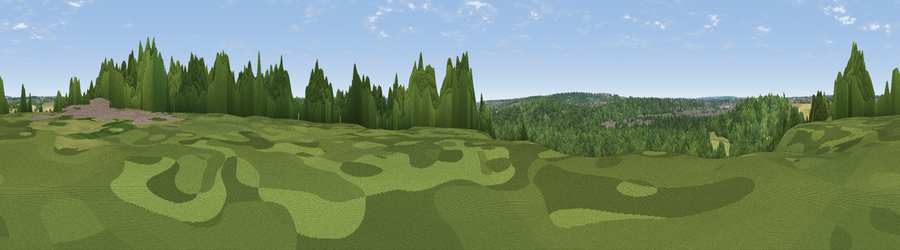

Viewpoint near Great Amwell
#43292 in England · top 44% of its area beats it · near Great AmwellWhere it is
The exact computed spot (TL 37975 13375). Click the marker for map links.
The view, rendered

A 360° render of this exact spot computed from the terrain model, tree cover and land cover — summer colours, afternoon light, calibrated against photographs of famous viewpoints. Real trees, hedges and buildings will differ in detail.
The panorama
Grey silhouette: terrain skyline in each direction (720 bearings, Earth curvature and refraction included). Dashed green: skyline with trees (+15 m) and buildings (+8 m) as obstacles. Blue strip: how far the ground is visible on each bearing.
Where the view opens
Wedge length = distance to the farthest visible ground on that bearing (vegetation-aware). Rings at 10, 25 and 50 km.
What fills the view
55% woodland · 24% grassland · 10% cropland · 7% water · 4% built-up
Angular shares of the visible panorama (visual magnitude), not map area. Landscape diversity 0.53 (0–1 Shannon).
Key numbers
More beautiful places nearby
The staircase of upgrades: each row has a higher view potential than everything closer. Driving times are estimates from straight-line distance, calibrated against real road routing — check an actual route before setting out.
| Place | Direction | Drive | Score |
|---|---|---|---|
| Viewpoint near Thundridge | NW · 4 km | ~10 min | 27.7 |
| Viewpoint near Lower Nazeing | S · 9 km | ~18 min | 28.5 |
| Viewpoint near Sewardstonebury | S · 16 km | ~28 min | 32.4 |
| Viewpoint near Sewardstonebury | S · 18 km | ~32 min | 32.7 |
| Viewpoint near Baldock | NNW · 23 km | ~38 min | 53.7 |
| Viewpoint near Royston | N · 27 km | ~43 min | 56.6 |
| Viewpoint near Hexton | NW · 30 km | ~47 min | 65.4 |
| Viewpoint near Ivinghoe | W · 42 km | ~62 min | 66.7 |
51.80200, -0.00037 · source: screening · position refined by local search. Computed location — check access rights before visiting.